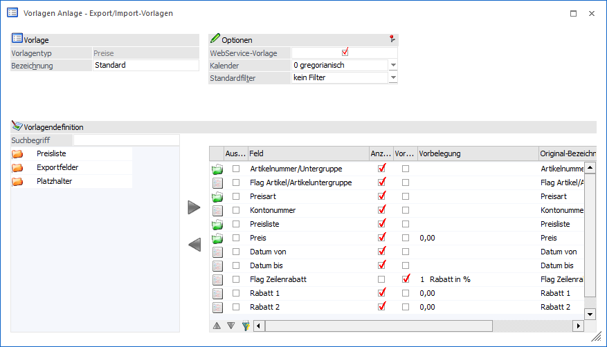

Grundsätzlich unterscheidet sich die Anlage von Vorlagen des Typs "Preise" nicht von der Anlage anderer Typen. Aus diesem Grund werden in diesem Kapitel nur die Spezial- bzw. Sonderfunktionen beschrieben.

Tabelle "Datenfelder der Vorlage"
Die Definition der Felder erfolgt wie bei allen anderen Vorlagen auch. Allerdings steht folgendes Sonderfelder bzw. -funktionen zur Verfügung.
Ø Flag Zeilenrabatt
Mit Hilfe dieser Option kann gesteuert werden, wie die Rabattberechnung erfolgen soll. Folgende Möglichkeiten stehen zur Verfügung:
ü 0 - fixe Rabattspalte vom Artikel (Rabattspalte stammt aus dem Artikelstamm)
ü 1 - Rabatt in % (Rabattsatz stammt aus den Feldern "Rabatt 1 / Rabatt 2")
ü 2 - Rabattspalte (Rabattspalte stammt aus den Feldern "Rabatt 1 / Rabatt 2")
Ø Rabatt 1 / Rabatt 2
Mit Hilfe dieser Felder kann ein Rabattsatz bzw. eine Rabattspalte angegeben werden. Ob es sich um einen Satz oder eine Spalte handelt wird wiederum über das Feld "Flag Zeilenrabatt" definiert.
Hinweis - Import
Bei einem Import werden zunächst passende Preislisteneinträge anhand der folgenden Kriterien gesucht:
ü Preistyp (Feld "Flag Preis/Rabatt")
ü Artikelnummer/Untergruppe
ü Preisart
ü Preisliste
ü Menge ab
ü Konto / Gruppe (Feld "Kontonummer") => optional, wenn in Vorlage vorhanden
ü Datum von => optional, wenn in Vorlage vorhanden
ü Datum bis => optional, wenn in Vorlage vorhanden
ü Colli => optional, wenn in Vorlage vorhanden
Alle zu der Abfrage passenden Preislisteneinträge werden entsprechend gelöscht. Abschließend erfolgt der Import der neuen / geänderten Preise in die WinLine.